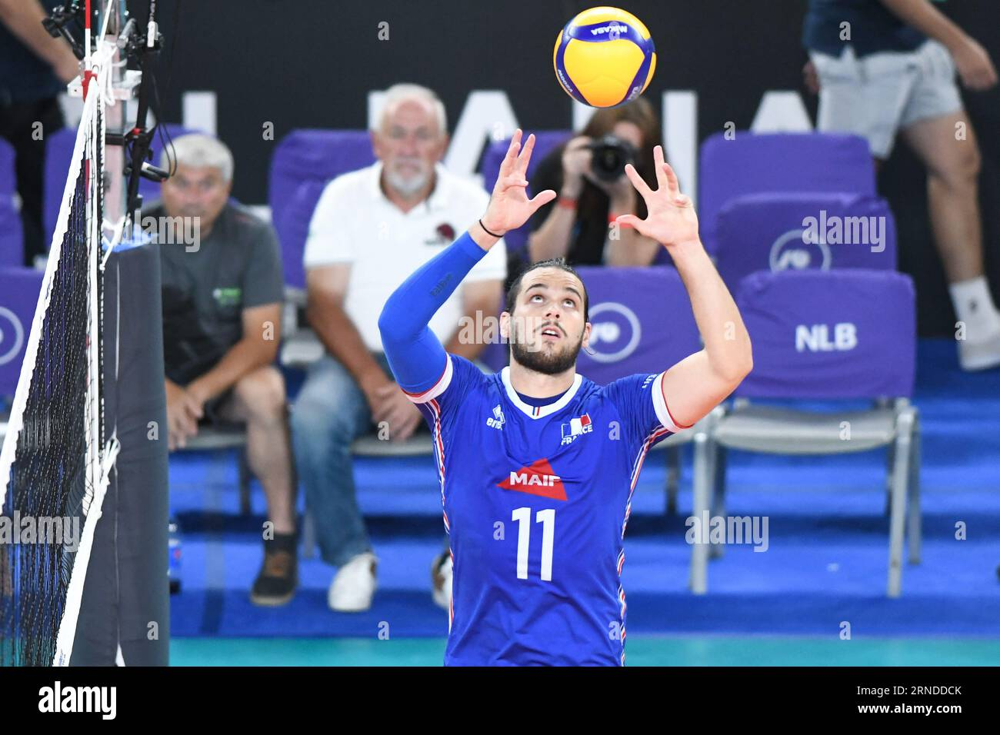
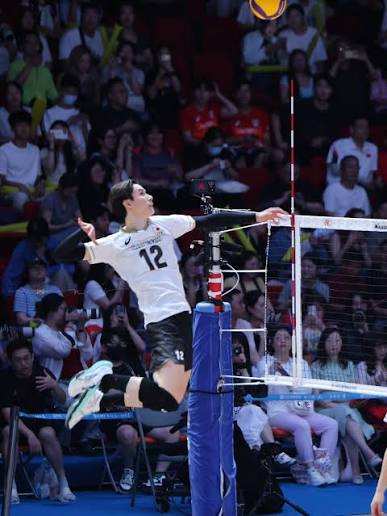
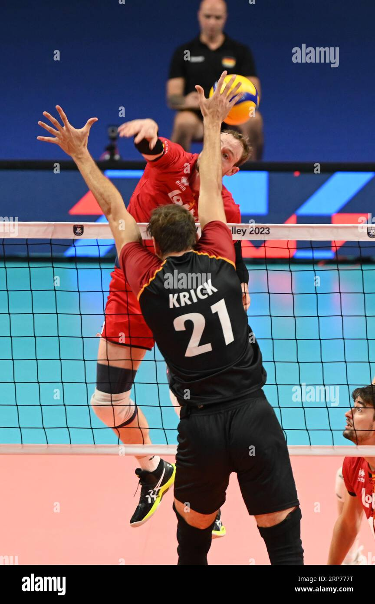
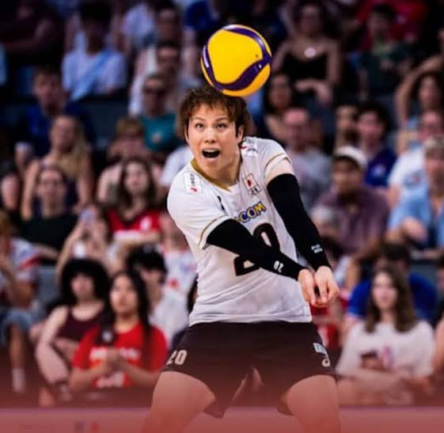
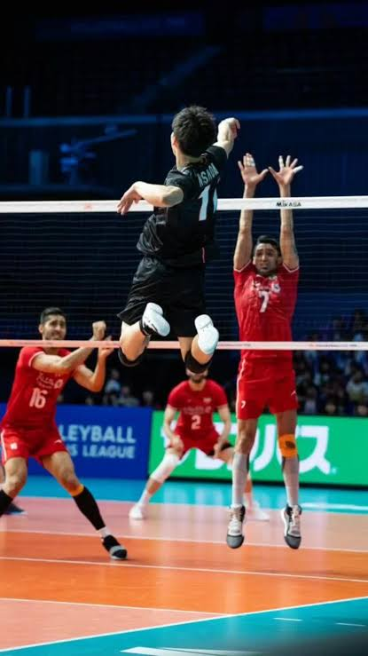

| Posición | Función |
|---|---|
|
Colocador
 |
Arma la jugada para el ataque. Es el cerebro y el director de la ofensiva del equipo, encargado de diseñar la estrategia de ataque en fracciones de segundo. Su función principal es recibir el segundo toque del balón y distribuirlo limpiamente, mediante un pase de dedos o de manos altas, hacia los atacantes en las mejores condiciones posibles para burlar el bloqueo rival. Para lograrlo, debe decidir a quién entregar el balón analizando la defensa enemiga en tiempo real, mantener una comunicación constante con sus compañeros y realizar fintas sorpresivas en el segundo toque cuando la oportunidad lo permita. Su perfil ideal requiere una técnica de manos impecable, gran agilidad mental, visión periférica y un liderazgo natural para guiar el ritmo del partido. |
|
Atacante / Punta
 |
Recibe y remata por las bandas. Es la posición más versátil y equilibrada del voleibol, ya que exige un dominio absoluto tanto de las facetas defensivas como de las ofensivas. Su juego se desarrolla principalmente por la banda izquierda de la cancha (posición 4), donde su labor primordial consiste en estabilizar el pase del equipo mediante la recepción del saque rival junto al líbero, para luego transicionar rápidamente al ataque. Son responsables de resolver jugadas complejas contra bloqueos dobles, atacar balones rápidos por la punta y ejecutar remates desde la zona de zaguero mediante la jugada conocida como "Pipe". Por todo esto, se buscan jugadores con una resistencia física excelente, una técnica pulida de antebrazos y una gran capacidad de resolución en la red. |
|
Central
 |
Bloquea en el centro de la red. Es el pilar indiscutible de la defensa en la red y el encargado de ejecutar los ataques más veloces del juego en la posición central (posición 3). Su trabajo defensivo consiste en desplazarse constantemente de un extremo a otro de la red para unirse a los jugadores de las bandas y consolidar bloqueos dobles o triples contra los remates contrarios. En la ofensiva, realiza ataques de primer tiempo o "cortas" pegado al colocador, funcionando también como un distractor que salta para amagar el golpe y arrastrar consigo el bloqueo rival, dejando libres a sus compañeros. Debido al tremendo desgaste físico de saltar en casi todas las jugadas, suelen ser sustituidos por el líbero cuando rotan a las posiciones de defensa, y su perfil exige ser los jugadores más altos de la plantilla, con un gran alcance de brazos y reflejos felinos. |
|
Líbero
 |
Especialista en defensa. Es el especialista defensivo puro del equipo, fácilmente identificable porque viste una camiseta de un color diferente y juega exclusivamente en las posiciones de la zona de atrás (zaguero). Su función principal es salvar balones imposibles en situaciones de defensa de campo y asegurar que la recepción de los saques llegue de manera perfecta a las manos del colocador. Tiene la responsabilidad de reemplazar a los centrales cuando estos pasan a la parte trasera de la cancha y actuar como un colocador de emergencia si el armador principal hace el primer toque. Cuenta con estrictas restricciones, ya que no puede sacar, bloquear, atacar el balón por encima de la red ni colocar de dedos por delante de la línea de tres metros, lo que requiere un perfil de jugador de menor estatura, sumamente rápido, con reflejos extraordinarios y una técnica de antebrazos impecable. |
|
Opuesto
 |
Es el principal referente ofensivo y el jugador que suele cargar con la mayor responsabilidad de anotar puntos en el equipo. Se ubica en la posición diametralmente opuesta al colocador, lo que le permite atacar con una potencia descomunal tanto desde la zona de la red (posición 2) como desde la línea de zaguero (posición 1, por detrás de la línea de tres metros). Debido a su rol puramente ofensivo, generalmente está liberado de las tareas de recepción para concentrar toda su energía en rematar balones altos o de "emergencia" cuando el pase inicial no es perfecto, además de ser un pilar fundamental en el bloqueo contra el punta rival. Este puesto lo desempeñan atletas de gran estatura, con una potencia de salto sobresaliente y una mentalidad sumamente agresiva. |